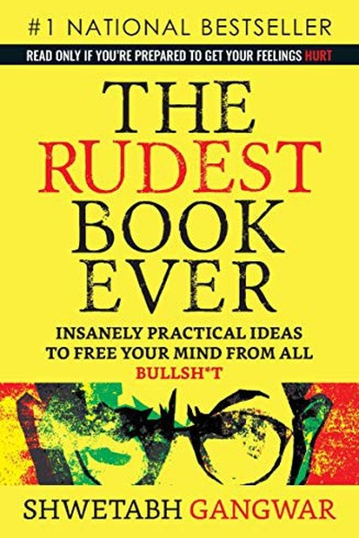

Library › Self-Improvement
The Rudest Book Ever — Summary & Key Lessons

Blunt, practical truth about self-worth, relationships and your career.
📖 OPEN THE FULL INTERACTIVE BREAKDOWN →🌐 Read it in Hindi, Hinglish, Gujarati, Tamil & 22 more languages — free, with audio.
💡 The Big Idea
Most self-help is polite; Gangwar's is rude on purpose. His core claim: you are not stuck because of your circumstances, your family, or your 'nature' — you are stuck because you keep choosing the comfortable lie over the uncomfortable truth. Fix your relationship with yourself first (self-worth, honesty, self-respect), and everything else — relationships, career, money — reorganizes around it. The book is a bootcamp in thinking clearly when it hurts.
🧠 The 7 Key Lessons
Lesson 1: Self-Worth Is a Decision, Not a Feeling
The Foundation
Gangwar's central idea: people wait to 'feel' worthy before they act worthy. But feelings follow action, not the other way around. Self-worth is built by keeping small promises to yourself — the workout you said you'd do, the task you said you'd finish. Every broken promise to yourself trains your brain that you don't matter; every kept one trains the opposite.
📖 Example: A person who feels 'low' waits for motivation to exercise. Gangwar's method: decide you are worth the workout, do it badly if needed, and let the decision — not the feeling — lead. Read the full example →
⚡ Do this: Pick one promise to yourself this week — small, specific, non-negotiable. Keep it. Notice how keeping it changes how you feel about the next one.
Lesson 2: No One Is Coming to Save You
The Wake-Up
Waiting for the right job, the right partner, the right 'break' is a disguised form of helplessness. Gangwar's blunt version: the rescue you're waiting for is not coming, and that's good news — because it means you're the only one who can do it, which means it's fully in your control. Victimhood is a comfortable prison; responsibility is an uncomfortable freedom.
📖 Example: The person who blames their parents, their college, their city for their stagnation can stay stuck forever and never be wrong. The person who takes responsibility can be wrong a hundred times — and improve a hundred times. Read the full example →
⚡ Do this: Write one sentence: 'If no one were coming to save me, what would I do differently this week?' Then do the first item.
Lesson 3: Honesty With Yourself Is the Rarest Skill
The Mirror
We lie to ourselves constantly — 'I'll start Monday', 'it's not that bad', 'I'm just not the type'. Gangwar's point: you cannot solve a problem you won't name. The first step of every fix in the book is brutal self-honesty. Ask yourself the questions you've been avoiding, and answer them without flinching. The truth is the cheapest therapy available.
📖 Example: Instead of 'I'm unlucky in love', the honest version is 'I keep choosing unavailable people because commitment scares me.' The first sentence is a dead end; the second is a problem you can work on. Read the full example →
⚡ Do this: Ask yourself one question you've been avoiding — about money, health or a relationship. Write the honest answer, even if it's ugly.
Lesson 4: Your Relationships Mirror Your Self-Worth
People
You accept the treatment you believe you deserve. If you tolerate disrespect, it's because some part of you agreed you were worth less. Gangwar isn't blaming the victim — he's pointing at the lever: raise your own standard and the people around you either rise to it or leave. Your self-respect is the boundary that filters your entire social circle.
📖 Example: The person who finally says 'I don't accept being shouted at' loses some relationships and gains peace — and the relationships that survive are stronger, because they were rebuilt on respect. Read the full example →
⚡ Do this: Identify one behaviour you currently tolerate from someone that you would not tolerate from a stranger. Set the boundary once, calmly.
Lesson 5: Comfort Is the Enemy of Growth
The Grind
Gangwar's blunt take on motivation: you don't need more of it, you need less comfort. Growth happens exactly where comfort ends — the difficult conversation, the boring practice, the scary application. His method is not to feel motivated but to build systems and routines that make the uncomfortable thing automatic. Discipline is just self-respect applied daily.
📖 Example: Writers don't wait for inspiration; they write at the same time daily. Gangwar's point: your dream deserves a schedule, not a mood. Most people nod at this principle and change nothing. The gap between agreeing and acting is where the whole game is won or… Read the full example →
⚡ Do this: Take the thing you keep postponing 'until you feel ready' and schedule it for a fixed time tomorrow. Do it regardless of mood.
Lesson 6: Think in Trade-Offs, Not Fairy Tales
The Mind
Every choice costs something, and pretending otherwise is how people get trapped. Gangwar's framework: before any big decision, list what you're gaining and what you're giving up — honestly. The dream job costs the safe salary; the relationship costs the freedom; the city costs the family. Clarity about the price is what makes the choice yours instead of an accident.
📖 Example: Someone who moves to a new city for a job and then resents the city never priced the loneliness. Priced honestly, the move was still right — but the resentment loses its power once you own the trade-off. Read the full example →
⚡ Do this: Before your next big decision, write two columns: what this choice gives me, what it costs me. Decide only after both are filled.
Lesson 7: Compare Yourself to Yesterday, Not to Others
The Trap
Comparison is the fastest way to feel worthless, because you're comparing your behind-the-scenes with everyone else's highlight reel. Gangwar's fix: make yourself the only competitor. Your only question each day is 'am I better than the version of me from yesterday?' If yes, you're winning, regardless of what anyone else is doing.
📖 Example: The student who compares himself to the topper feels hopeless and stops. The student who compares himself to last month's syllabus coverage improves steadily — and often ends up passing the topper anyway. Read the full example →
⚡ Do this: Start a one-line daily log: 'Today I was better than yesterday because…'. Review it at the end of the week.
✅ 5-Step Action Plan
- Decide your self-worth daily — keep one promise to yourself every day.
- Write the honest answer to the one question you've been avoiding.
- Set one boundary you've been failing to set.
- Schedule the uncomfortable thing; stop waiting for motivation.
- Keep a daily 'better than yesterday' log for one week.
⚠️ When This Doesn't Work
Gangwar's brutal self-honesty is powerful — and its shadow is self-blame. 'No one is coming to save you' can become 'everything is my fault' when the obstacles are genuinely structural: illness, systemic discrimination, an economy in crisis. The book's framework assumes your environment is roughly fair and your agency is the main variable. In unfair environments, the honest version of the lesson is: take responsibility for your response while also naming the external forces honestly. Rudeness toward yourself is not the same as clarity.
💀 The Graveyard Proves It
🦈 BharatPe & Ashneer — The Shark Who Bit His Own Company. Burn: A $2.8B fintech's reputation + his own seat. Read the full case study →
💬 Best Quotes from The Rudest Book Ever
- “Your self-worth is not a feeling. It is a decision you make every single day.”
- “No one is coming to save you. And that is the most liberating news you will ever get.”
- “You don't have a motivation problem. You have a self-worth problem.”
Interactive version: mark lessons as read, listen in your language, share quote cards.